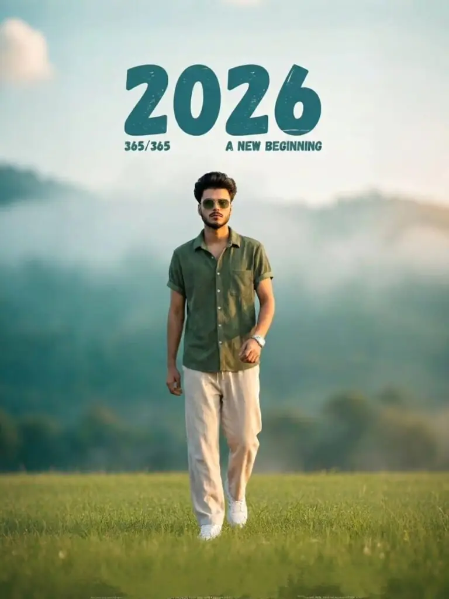
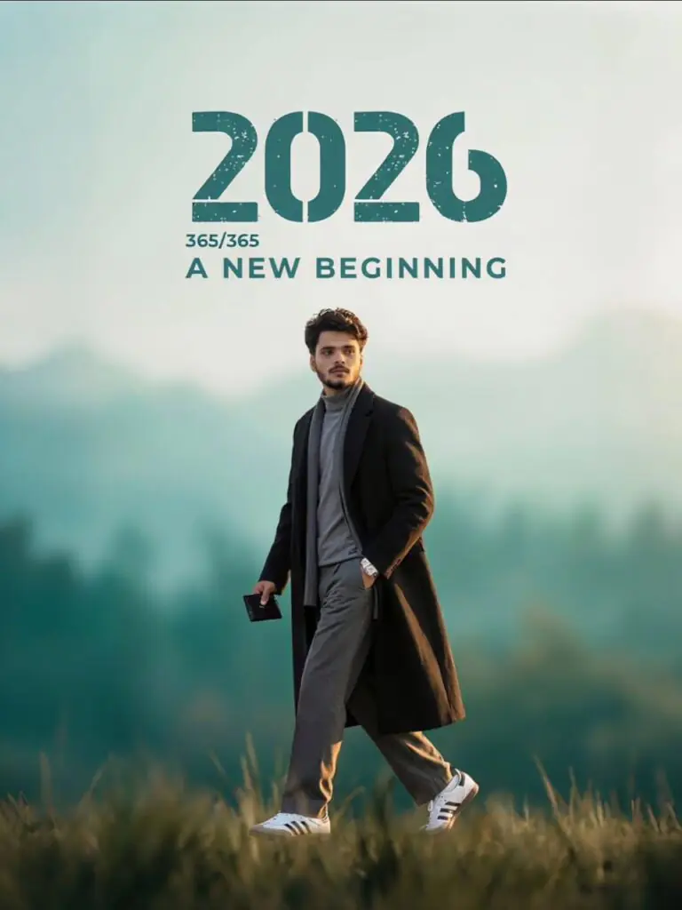
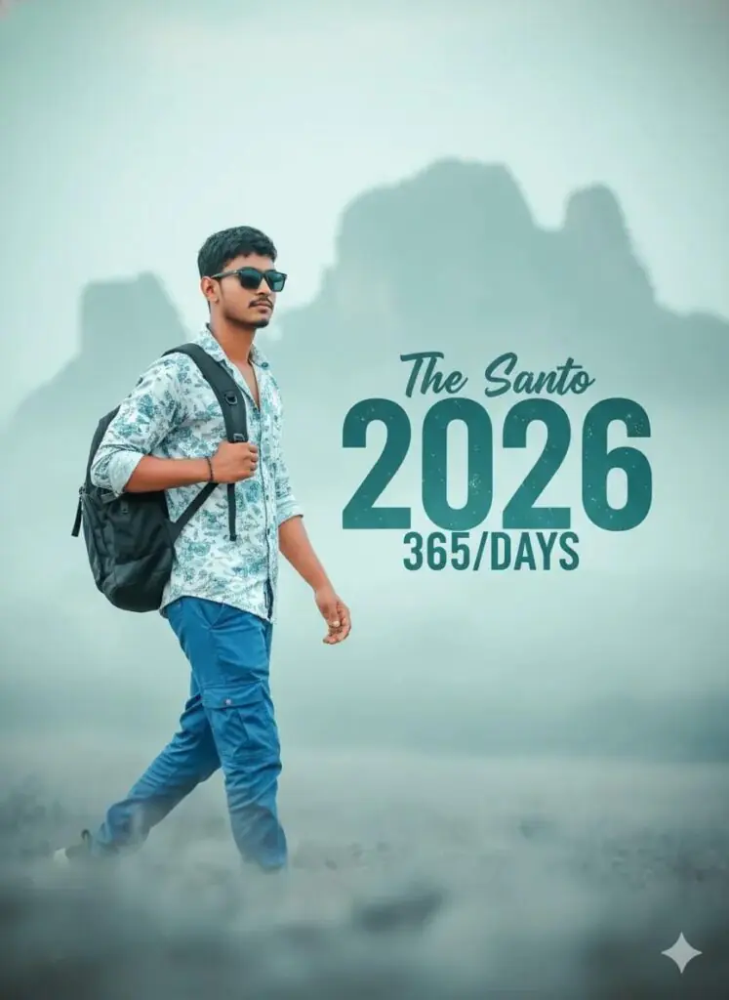
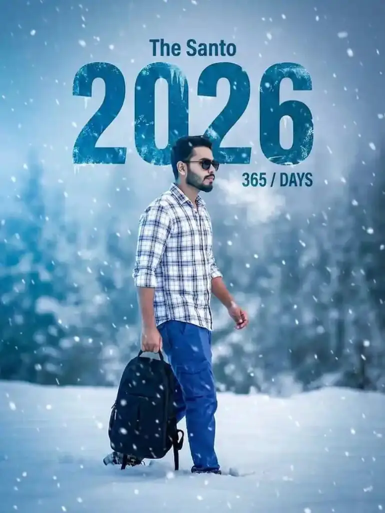
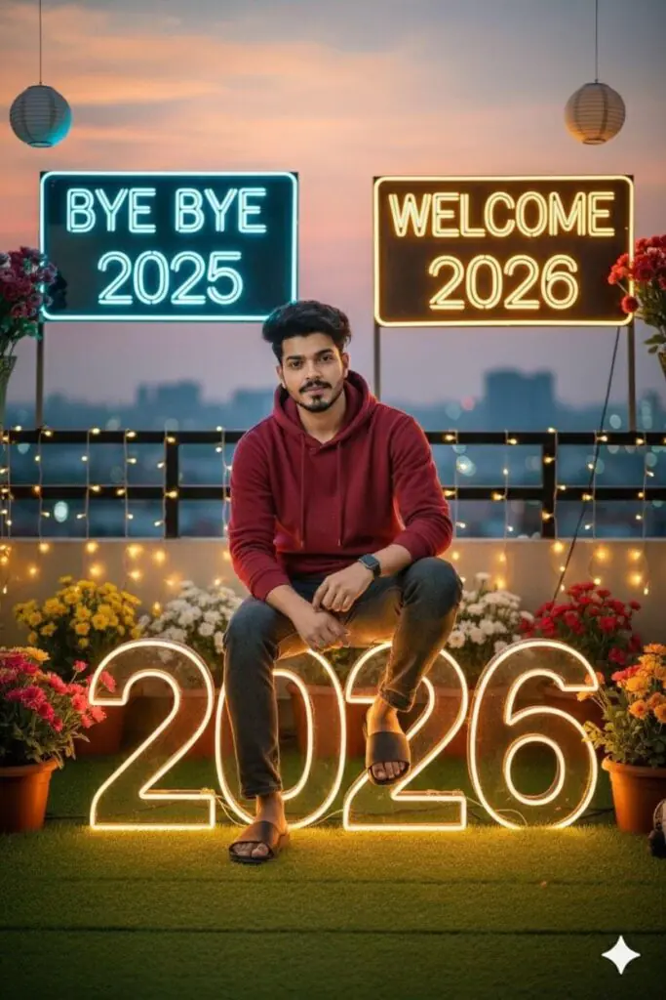
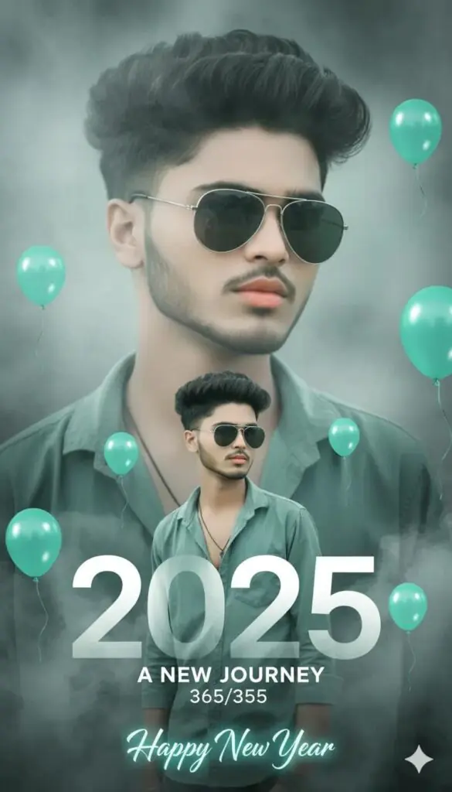
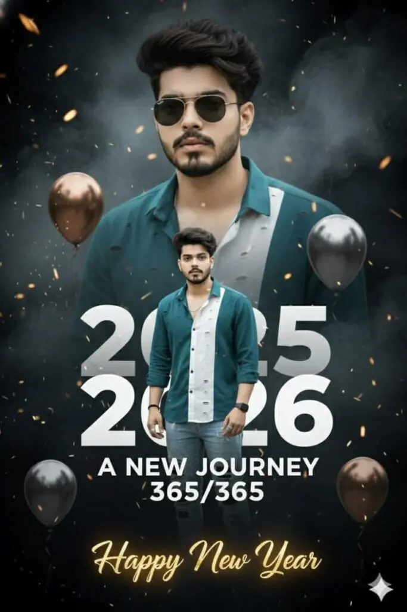
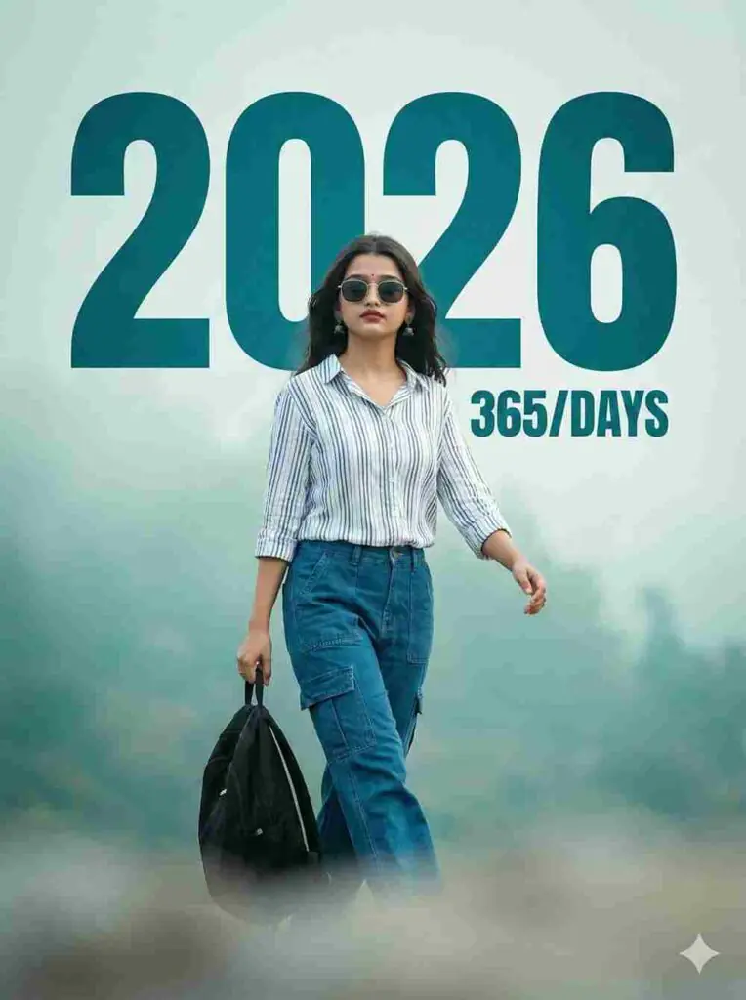
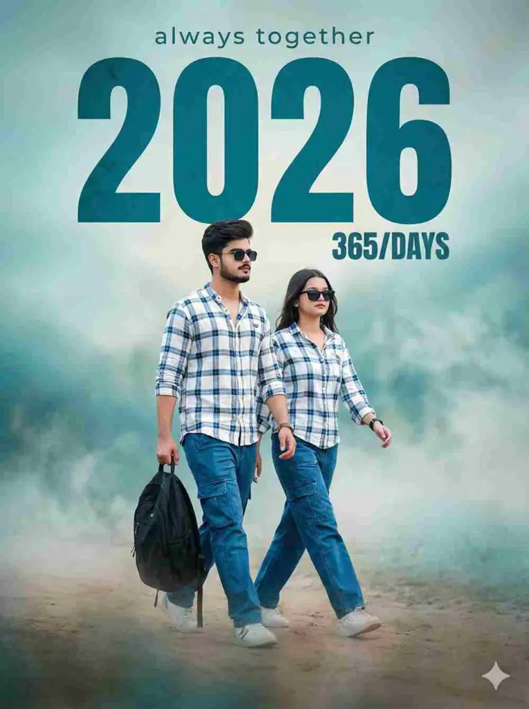

As we all know that new year 2026 is coming and everything is looking for new year photo editing prompts for gemini.
So in this post i will share all latest trending gemini prompts for new year 2026.
5 Best New Year 2026 Gemini Prompts For Boys
Want more awesome prompts?
Join our community and get the latest viral prompts daily.
Follow on Instagram
? AI PROMPT
"Ultra-realistic full-body portrait of a man walking forward on a green open field at golden hour. Soft sunlight highlights his face, natural rim-light on shoulders, and long gentle shadows on the grass. Misty mountains and a teal sky in the background with a smooth cinematic blur. The man wears an olive short-sleeve shirt, light beige trousers, white sneakers, sunglasses, and a wristwatch. Calm, confident expression, hands relaxed, mid-step walking pose. Add bold header text above: '2026', smaller text: '365/365 - A NEW BEGINNING'. Clean minimalist aesthetic, high-clarity, warm colorgrading."

? AI PROMPT
"Full-body shot of a stylish young man walking confidently through a field at golden hour. He wears a long black overcoat, grey turtleneck, grey trousers and white sneakers. Soft cinematic lighting, shallow depth of field, teal-green blurred background, calm atmosphere. Add bold text on top: '2026 - A NEW BEGINNING, 365/365'. Ultra-realistic, cleancomposition, minimalistic aesthetic."

? AI PROMPT
Uploaded man wearing sunglasses, white and blue batan shirt, blue cargo and left hand black backpack walking confidently across a soft, blurred foreground. The background misty ethereal landscape, dominated by muted teal, blue and light gray tones subject large style text overlay reads "2026" bold, slightly distressed teal font. Smaller text below it says "365/DAYS" and "The Santo" in top. Cinematic, highly-detailed, soft lighting, style, new year.Camera angle is left side

? AI PROMPT
portrait of a man (100% accurate face) wearing sunglasses, white-and-blue button shirt, blue cargo pants, black backpack in left hand, walking confidently through a softly blurred snowy foreground. Heavy cinematic snowfall, cold teal and gray winter mist, frosty air around him. Large distressed teal text "2026" centered behind him with subtle ice texture. Small text: "The Santo" above and "365 / DAYS" below. Cold blue lighting, soft shadows, dreamy frozen atmosphere. Left-side angle, 8K clarity, cinematic winter film look.

? AI PROMPT
portrait of a man (100% accurate face) wearing sunglasses, white-and-blue button shirt, blue cargo pants, black backpack in left hand, walking confidently through a softly blurred snowy foreground. Heavy cinematic snowfall, cold teal and gray winter mist, frosty air around him. Large distressed teal text "2026" centered behind him with subtle ice texture. Small text: "The Santo" above and "365 / DAYS" below. Cold blue lighting, soft shadows, dreamy frozen atmosphere. Left-side angle, 8K clarity, cinematic winter film look.

? AI PROMPT
portrait of a man (100% accurate face) wearing sunglasses, white-and-blue button shirt, blue cargo pants, black backpack in left hand, walking confidently through a softly blurred snowy foreground. Heavy cinematic snowfall, cold teal and gray winter mist, frosty air around him. Large distressed teal text "2026" centered behind him with subtle ice texture. Small text: "The Santo" above and "365 / DAYS" below. Cold blue lighting, soft shadows, dreamy frozen atmosphere. Left-side angle, 8K clarity, cinematic winter film look.
? AI PROMPT
Create a hyper-realistic, ultra-detailed 100% same photo hair,and is wearing a vintage horizontal striped oversized full-sleeve shirt,layered gold Cuban chain necklaces, and a single small diamond earring.His red sunglasses .8k ultra HD of aman with your reference face standing in a Mordern denim jacket red a golden "2026" Threads trophy. Behind him, giant glowing "2026" numbers, golden follower -gold text: "Happy New Year" for the Love And Support on Threads
Just Tap on Prompt to copy full Prompt ⤵️
? AI PROMPT
A stylish, cinematic New Year's greeting photo manipulation. A young, cool-looking man with trendy hair (mullet-style) and sunglasses, wearing a teal/dusty green open button-down shirt. The composition is double-exposure style: a large, dominant portrait of the man in the background, with a smaller, full-body version of him layered in the foreground. Dominant text in a modern, bold font reads "2025" fading into "2026" with the subtitle "A NEW JOURNEY" and "365/365"

? AI PROMPT
Prompt 👇📌@vicky_jack0.2
A stylish, cinematic New Year's greeting photo manipulation. A young, cool-looking man with trendy hair (mullet-style) and sunglasses, wearing a teal/dusty green open button-down shirt. The composition is double-exposure style: a large, dominant portrait of the man in the background, with a smaller, full-body version of him layered in the foreground. Dominant text in a modern, bold font reads "2025" fading into "2026" with the subtitle "A NEW JOURNEY" and "365/365".

? AI PROMPT
A stylish, cinematic New Year's greeting photo manipulation., cool-looking man with trendy hair (mullet-style) and sunglasses, wearing a teal/dusty green open button-down shirt. The composition is double-exposure style: a large, dominant portrait of the man in the background, with a smaller, full-body version of him layered in the foreground. Dominant text in a modern, bold font reads "2025" fading into "2026" with the subtitle "A NEW JOURNEY" and "365/365".
New Year 2026 Prompt For Girls

? AI PROMPT
portrait of a man (100% accurate face) wearing sunglasses, white-and-blue button shirt, blue cargo pants, black backpack in left hand, walking confidently through a softly blurred snowy foreground. Heavy cinematic snowfall, cold teal and gray winter mist, frosty air around him. Large distressed teal text "2026" centered behind him with subtle ice texture. Small text: "The Santo" above and "365 / DAYS" below. Cold blue lighting, soft shadows, dreamy frozen atmosphere. Left-side angle, 8K clarity, cinematic winter film look.
New Year Prompt For Couple 2026

? AI PROMPT
Uploaded girl and boy wearing sunglasses, white and blue batan shirt,blue cargo and left hand black backpack walking confidently across a soft, blurred foreground.The background misty ethereal landscape,dominated by muted teal, blue and light gray tones subject large style text overlay reads "2026" bold, slightly distressed teal font.Smaller text below it says "365/DAYS" and"always together"in top.Cinematic, highly-detailed,soft lighting,style,new year. Camera angle is left side
In this post i have shared new year prompts which will help you to create HD image from gemini and any Image generation Ai tool.